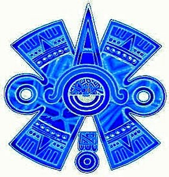
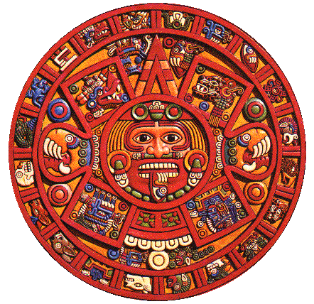
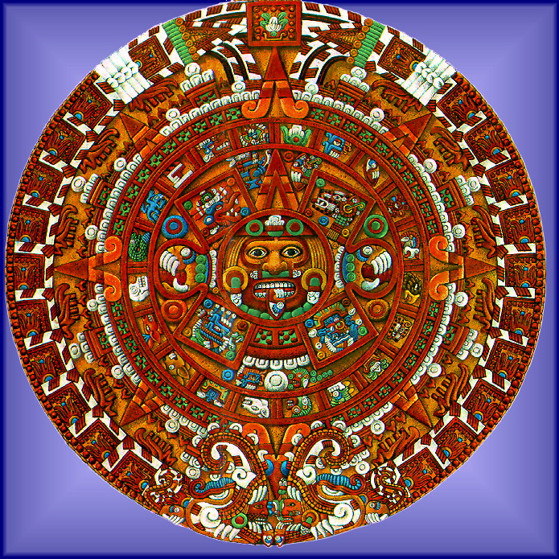

ASTR 1210 (R. W. O'CONNELL)

THE AZTEC CALENDAR STONE
THE SUN STONE
The "Aztec Calendar Stone" is the most famous of a number of similar
pre-Columbian Mesoamerican carvings. It is a 12-foot diameter, 25 ton
stone, presently in the National Museum of Anthropology, Mexico. It
was carved in 1479 AD, 40 years before the Spanish conquest (after
1519).
Here is a
photograph of the stone as it looks today. Two reconstructions of the
original appearance of the Stone are shown on this page.
The themes expressed in the stone are common to cultural traditions
extending back to over 2000 years earlier, through the Toltec, Maya, Olmec
and related societies. The stone is less a detailed representation of
the well-developed Aztec calendar system than a monument to their most
important deity, the Sun god
Tonatiuh. It is more correctly
called the "Sun Stone."
The circular shape of the stone represents the cyclic nature of time
in the Mesoamerican world view. The Aztecs were closely familiar with
the regular cyclic behavior of astronomical objects like the Sun,
Moon, and Venus, building on observations compiled by the highly
accomplished Maya astronomers who preceded them. The two innermost
concentric circular bands surrounding the complex central carving of
the stone represent parts of the two primary repeating ritual
calendars of Aztec religious and civic life. The smaller band
contains the 20 "day signs" of the ceremonial "month." These were
combined with 13 numbered days to produce a unique series of dates
within a 260-day cycle called the
tonalpohualli (or
the
tzolkin by the Maya). In contrast to most calendars, the
concept of a lunar month (30 days) did not play a major role in this
system.
The larger band of 52 symbols represents the 52-year duration of the
"Calendar Round." Days within this cycle received unique dates by
virtue of combining the
tonalpohualli cycle with the 365-day
solar year. In civic life, the Round was equivalent to our century.
Since individuals in Aztec times rarely lived longer than 52 years,
each day of their lives carried a unique calendrical marker.
The cyclic mechanism of the Mesoamerican calendar is illustrated in
this video.
For more details on the calendars represented on the stone, see
this web
site.

Center of the Sun Stone. (Painting by
R. S. Flandes)
RITUAL MURDER
To sustain him in his movement across the sky and to forestall the
descent of perpetual cosmic darkness and vicious demons on the Earth,
the Aztecs believed they were obligated to regularly feed the Sun god
human hearts and blood. The tongue-like implement extending from the
god's mouth on the stone is a sacrificial flint knife of the kind used
to slash open the chests of captive warriors during the ritual murders.
The god's insistence on sacrifice is symbolized by the bird-like claws
that clutch human hearts on either side of his face.
The close of a Round of 52 years involved a concerted nation-wide
cleansing ritual, in which all fires were extinguished, followed by the
symbolic rekindling of the Sun by building a fire on the opened chest
of a human sacrificial victim. The Sun Stone itself was probably
intended to be mounted horizontally in order to receive the hearts and
blood from this and other violent ceremonies.
MESOAMERICAN COSMOLOGY
Beyond reflecting the calendar, the stone describes the vibrant but
cataclysmic Aztec cosmology. The glaring face of the Sun god at the center
of the stone (see image above) is surrounded by a six-lobed symbol for
Ollin, or "movement." Also reproduced at the head of this
page, the Ollin symbol is the only one of the twenty day signs to
represent an abstract concept as opposed to "Reed," "Wind," or
"Water," for instance. It refers to the movement of the Sun through
the sky but also to the movement of the Earth in the form of
destructive earthquakes.
The four squarish panels within the Ollin symbol depict the four
cosmological epochs thought to have preceded the era
of the Aztec empire. During each of these, the gods struggled to
nurture mankind on Earth only to be defeated by a catastrophe. The
date and nature of each cosmic holocaust is given in the panels: 4
Jaguar, 4 Wind, 4 Rain, and 4 Water---the numeral 4 being a bad
omen.
Here is a description of the cosmological panels on the Sun Stone from
Skywatchers of Ancient Mexico by Anthony F. Aveni (1980, p.
143):
"The concept of the cyclic destruction and rebirth of the world is a common
theme in Mesoamerican religion and mythology. On the famous Aztec
calendar stone, surrounding the face of the Sun God, about whom all
periodic phenomena in nature take place, we see four rectangular panels
symbolizing the destruction of the world on each of the previous epochs
through which it has passed. In the most remote epoch (upper right),
giants who inhabited the earth were attacked and devoured by jaguars.
At the upper left, the god of wind symbolizes the hurricanes that carried
away the people of the second epoch. The third cosmogonic epoch,
symbolized the god of fire-rain at the lower left, was destroyed by
lava and fire in a great volcanic eruption. The few survivors were
those who were able to transform themselves into birds. Storms and
torrential rains epitomized by the water god ending the fourth epoch
(lower right panel) caused men to be changed into fishes. In the present,
or fifth, epoch destruction by earthquake is said to await us."
The fifth cosmological era, when the stone was carved, began with the
self-immolation of the god
Nanhuatzin on behalf of mankind
and his reappearance in the sky as the Sun god. Four small circles at
the corners of the large Ollin symbol give the date 4 Ollin on which
the transformed god, now the "Fifth Sun," began moving through the
sky. But the date also predicts the earthquake catastrophe that the
Aztecs believed would end the fifth cosmic epoch.
THE MAYA LONG COUNT AND THE END OF
THE WORLD
The Maya, who preceded the Aztecs but whose civilization dramatically
collapsed ca. 850-950 AD, also believed in the recurring cosmic cycle
of birth and destruction, although they regarded the then-current
cycle as the fourth one rather than the fifth. The Maya tracked time
within each cycle with a third primary calendar system, the Long
Count. (The Aztecs had abandoned this device.) The Long Count
assigned a unique number to each day within a cosmic cycle. Counts
were expressed in a modified base-20 system, the longest unit of which
was the
baktun. A
baktun is 20x18x20x20 = 144,000
days or 394 solar years long. Some Maya documents suggest that a
cosmic creation cycle would end in a worldwide disaster after exactly
13
baktuns, or 5125 years. By cross-correlating with unique
astronomical events and historical dates after the Spanish conquest,
archaeologists were able to convert Long Count dates to those in the
Julian (Western) calendar. The starting date of the fourth cycle (and
the end of the previous one) was determined to be 11 August 3114 BC.
But that implied that the end of the fourth cosmic cycle occurred
on
21 December 2012!
You can find much speculation on the Internet about the meaning
of the cycle turnover in December 2012, including irresponsible
predictions of a Doomsday. Needless to say, that didn't happen. But
the predictions were groundless to begin with. Remember that for all
their skill in tracking the planets, the Mesoamerican world view was
riddled with superstition, and they showed no insight regarding the
true physical nature of the universe or even the size and shape of the
Earth. Their writings were vague and contradictory concerning the
cosmic cycles, and some inscriptions anticipate eras as much as
20
20 years in an inconceivably distant future. Finally, as
is obvious from the historical record, there was no worldwide
cataclysm in 3114 BC, the end of the preceding cycle. And the actual
apocalypse for the Maya civilization took place not in 2012 but over
1100 years before and from more mundane causes.
For an extensive discussion of the scientific facts concerning the
2012 termination of the Maya cosmic cycle, see the
2012Hoax website.
PRE-SCIENTIFIC COSMOLOGIES
The Aztec Sun Stone beautifully captures the colorful, if grim,
Mesoamerican world view. This is a fascinating example of a
pre-scientific cosmology. The intense, if often unconscious, desire
to find human meaning in the universe and the absence of
stringent standards for evidence in pre-scientific cultures are the
reasons that their world views are so different from ours. The shared
features of such world views include these:
- They assume mankind to be the focus and purpose of the universe
(even if that universe is harsh or cruel, as in the case of Mesoamerican
cultures).
- They are confined to ordinary human perceptual horizons of space,
time, and phenomena because no instruments capable of expanding those
horizons were available. In the absence of instruments, the human
imagination is no match for the real universe.
- They usually feature strong allegorical, mythological, or supernatural
elements.
- They are strongly "projective": human psychology,
inflated to supernatural proportions, is imposed outwards on the
cosmos.
- Direct, persistent, supernatural control of natural phenomena is
usually assumed.
- They feature idiosyncratic elements not shared with other cultures
(in sharp contrast to scientific interpretations, which are pan-cultural).
- The "provenance" of ideas and the empirical evidence supporting them are
considered unimportant.
SUN STONE RECONSTRUCTIONS
The images above and below are artists' reconstructions of the stone's
original appearance, including its likely coloration. The image below
was copied from
http://copan.bioz.unibas.ch/meso/sunstone.jpg. It is an
interpretation by F. Devalos from
National Geographic.
An interactive, interpretive map of the calendar stone used to be posted at
http://www.ai.mit.edu/people/montalvo/Hotlist/aztec.html. Maybe
it will reappear somewhere else soon.

Last modified
December 2020 by rwo
Text, other than the Aveni quote, copyright © 1999-2020
Robert W. O'Connell. All rights reserved. These notes are intended
for the private, noncommercial use of students enrolled in Astronomy
1210 at the University of Virginia.
 Back to ASTR 1210 Study Guide 5 (Ancient Astronomy)
Back to ASTR 1210 Study Guide 5 (Ancient Astronomy)
{kind=link}